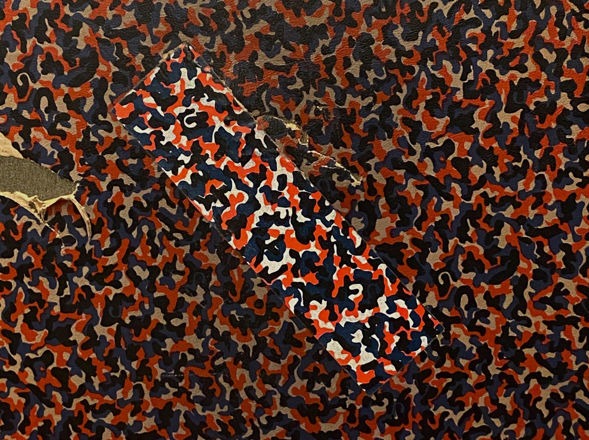

NEWS
2023
- 01/06/2023 | Ogazón & Ryan Elliott's set for HÖR got picked as Mix of the Month by Groove Magazine
- 24/05/2023 | RTL Luxembourg does a feature including a spoken interview with Ogazón.
- 29/04/2023 | Marcel Dettmann and Ogazón play a b2b set for Boiler Room on April 29.
- 10/04/2023 | New Mix out for Dutch label and collective Frenzy.
- 19/03/2023 | Resident Advisor picks Ogazón's Multisex mix as Mix Of The Day.
- 22/01/2023 | Ogazón Interview for the Luxembourg local radio station 100,7.
- 01/01/2023 | Ogazón joins Marcel Dettmann's freshly founded GOOD NEWS agency.
2022
- 20/10/2022 | Interview for GROOVE MAGAZIN.
- 06/10/2022 | Podcast release for the infamous Circoloco Radio.
- 27/09/2022 | Ogazón's selection of the moment for Odyssee.FM.
- 21/07/2022 | GROOVE MAGAZIN publishes monthly charts curated by Ogazón.
- 23/06/2022 | Ogazón features on TAGEBLATT after Luxembourg National Day gig.
- 20/05/2022 | Mix recorded for EOS RADIO is Mix of the Month at GROOVE MAGAZINE.
- 05/01/2022 | Interview and Mixtape for FvF.